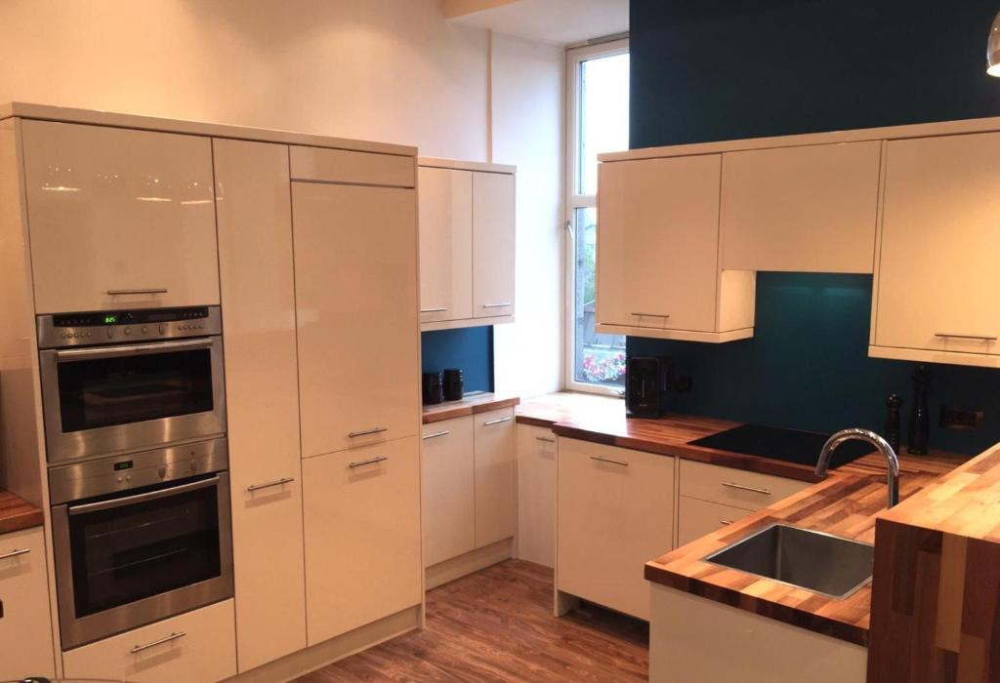
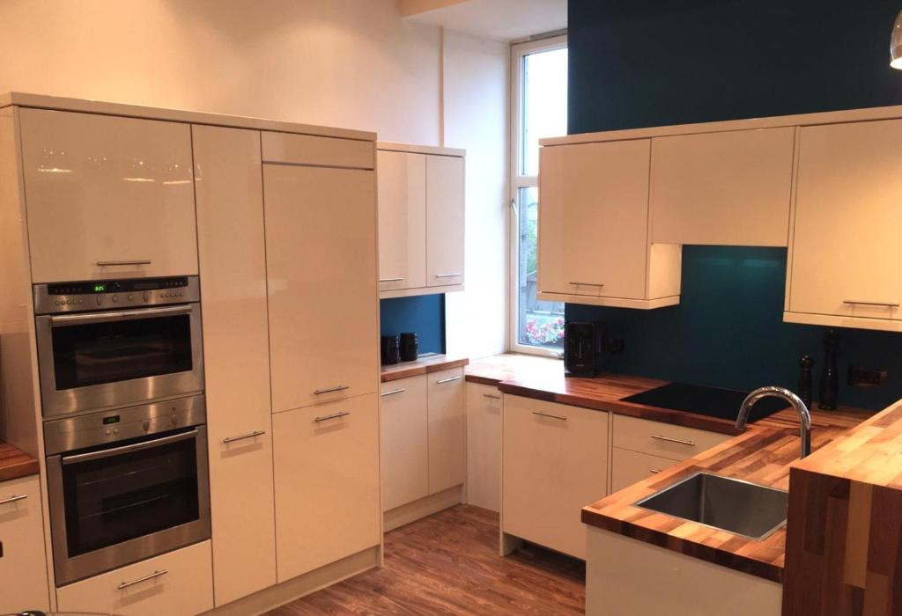

Dundee Room

 

More photo
Dupplin152 bed and breakfast is a 4 star Bed & breakfast set in Dundee. The property is around 2.8 km from Discovery Point and 1.9 km from University of Dundee. Broughty Ferry Beach is 9 km away.
All units in the bed and breakfast are fitted with a Smart TV with satellite channels. The en suite is equipped with a shower and free toiletries. All rooms will provide guests with tea and fresh coffee making facilities.
The Full Scottish breakfast as well as continental choices are served daily at the property. Evening meals and packed lunches are provided.
Edinburgh Airport is 100 km away.
Property surroundings
What's nearby
Balgay Park 600 yd
The Dundee Law 900 yd
Dudhope Park 1,050 yd
Verdant Works 0.8 mi
University of Dundee Botanic Garden 1.2 mi
The Fun Factory 1.4 mi
Fun Factory Camperdown 1.4 mi
Discovery Point 1.5 mi
V&A Dundee 1.5 mi
Clatto Country Park 2 mi
Restaurant & cafes
Cafe/barLogie Bar 50 yd
Cafe/barLodge Albert No448 50 yd
RestaurantChen's Chinese Takeaway 200 yd
Top attarctions
Broughty Castle 5 mi
Glamis Castle 10 mi
Hill of Tarvit Mansion 11 mi
St Andrews Cathedral 12 mi
Ski lift
Condor Dry Ski Slope 1 16 mi
Condor Dry Ski Slope 2 16 mi
Beaches in the neighbourhood
Broughty Ferry Beach 5 mi
Public transport
TrainDundee 1.4 mi
TrainInvergowrie 2.3 mi
Closest airport
Dundee Airport 1 mi
Edinburgh Airport 37 mi
Aberdeen Airport 58 mi